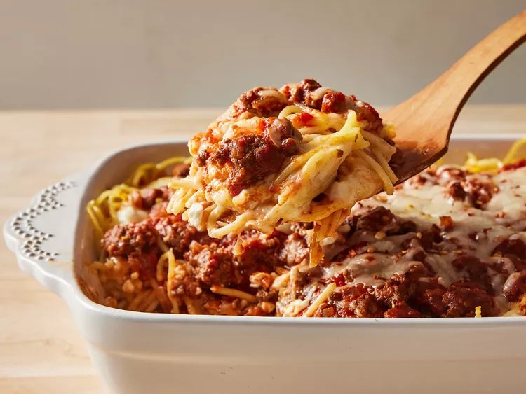

Comforting baked spaghetti recipe with plenty of melted cheese — the perfect dish for potlucks, family gatherings, or a weeknight dinner.
Gather all ingredients. Preheat the oven to 350 degrees F (175 degrees C). Lightly grease a 9x13-inch baking dish.
Bring a large pot of lightly salted water to a boil. Cook spaghetti in boiling water, stirring occasionally, until tender but firm to the bite, about 12 minutes. Drain.
Meanwhile, heat a large skillet over medium heat. Cook and stir beef and onion in the hot skillet until meat is browned and onion is soft and translucent, about 5 to 7 minutes.
Drain excess oil from the pan; stir in spaghetti sauce and seasoned salt.
Whisk eggs, Parmesan, and butter in a large bowl. Add spaghetti and toss to coat.
Place 1/2 of the spaghetti mixture in the prepared baking dish. Top with 1/2 of the cottage cheese, 2 cups mozzarella, and 1/2 of the meat sauce. Repeat layers. Cover with aluminum foil.
Bake in the preheated oven for 40 minutes. Remove the foil and sprinkle with remaining 1 cup mozzarella.
Continue to bake until cheese is melted and lightly browned, 20 to 25 minutes.
Serve and enjoy!